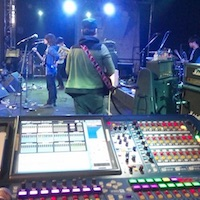
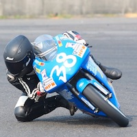

Resume
-
2011 - 2015
National Chiao Tung University, Bachelor in Electronics Engineering
While building up solid foundation in NCTU EE, my passion toward music prompted me to set the life goal of pursuing a career in which I could immerse in the beauty of music while integrating my specialty in electronic engineering
-

2013 - 2015
Audio Engineer
I had been working in the audio industry since my junior year in college, which made me able to gain extraordinary experiences such as being in charge of live audio mixing at a concert with thousands of audience members, or even social movements that rolled over months.
-

Jan 2015 - SEP 2015
Ironman Motor Racing Team
A part of my crazy college life. Somehow, my interest toward motorcycle gone too far. Which made me became a racer in a racing team and won some trophies.
-
MAR 2016 - JUL 2017
Music and Audio Computing Lab, Academia Sinica, Taiwan
Thanks to Dr. Yi-Hsuan Yang, who offered me to work as a research assistant in the Music and Audio Computing Lab at Academia Sinica in March 2016. Since then, I have been focusing on developing neural networks in the application of music related tasks, which includes hit-song prediction, music recommendation, and music generation.
-
AUG 2017 - present
Center for Music Technology, Georgia Tech, USA
After Academia Sinica, the enthusiasm for the future of AI music motivates me to pursue a master degree in GTCMT. My research covers around evaluation method of music generation, artificial intelligence in music visualization, painting creation via robotic musicianship and deep learning powered synthesizer.
-

MAY 2018 - present
Machine Learning Co-op, Bose Corporation, USA
Currently working with the Machine Learning Team of Bose Central Data Organization, bringing new concepts for deep learning based headphone engagement.